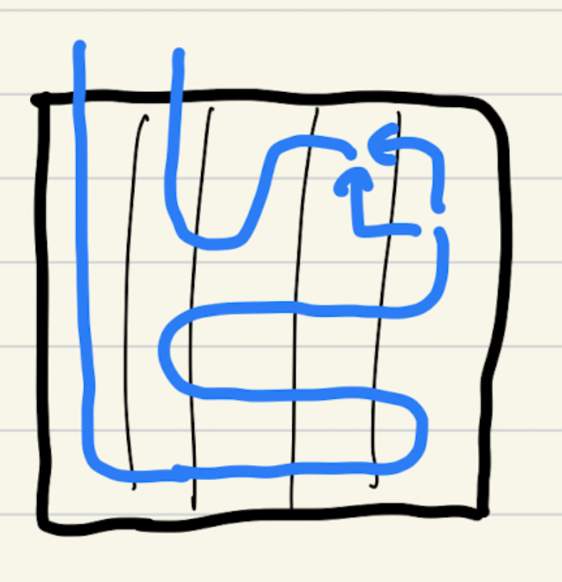
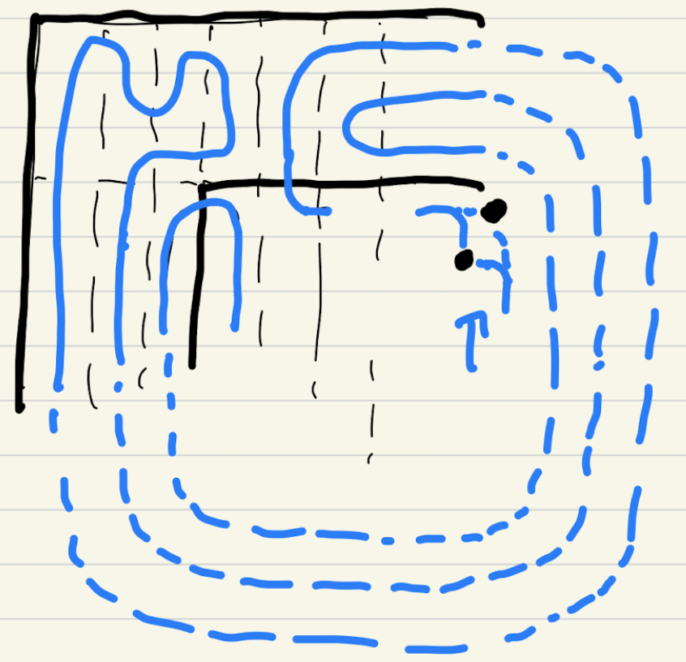

2022 Bi0s Ctf
This weekend, I played multiple CTFs including
KnightCTF, Insomnihack, bi0sCTF.
KnightCTF challenges weren’t so hard / high quality, so I just cleared 7 crypto challs, which required extremely low level knowledge about crypto, and stopped playing.
For Insomnihack, I was given a very few time to play, since my team was not really focusing on it, and was planning to focus on bi0sCTF which starts 3 hour later.
Despite, I was glad that I solved one crypto chall about GCM mode in AES.
Now about bi0sCTF, my team ‘thehackerscrew’ gladly finished top 1. I solved only 2 crypto challenges out of 4. Something worth remembering for me is that I first-blooded both challs.
But it was not very twisted challenge anyway, just honest challs which easily shows the path to solving them. I wished that I could solve one more challenge called too-ec, but wasn’t so familiar with the method.
leaky-dsa
chall.sage
from Crypto.Util.number import *
from secret import flag
from hashlib import sha256
p = 0xffffffff00000001000000000000000000000000ffffffffffffffffffffffff
a = 0xffffffff00000001000000000000000000000000fffffffffffffffffffffffc
b = 0x5ac635d8aa3a93e7b3ebbd55769886bc651d06b0cc53b0f63bce3c3e27d2604b
E = EllipticCurve(GF(p), [a,b])
G = E.gens()[0]
q = G.order()
priv = Integer(bytes_to_long(flag))
def sign(msg, d):
k = int.from_bytes(sha256(int(d).to_bytes(d.nbits()//8 + 1, 'big') + sha256(msg).digest()).digest(), 'big')
z = int.from_bytes(sha256(msg).digest(),'big')
r = int((k * G)[0]) % q
s = (inverse_mod(k, q) * (z + d * r)) % q
leak_k = (k >> 120) << 120
return z, r, s, leak_k
for i in range(2):
msg = input("Enter message: ").encode()
print(sign(msg, priv))
It was an ecdsa challenge that gives upper bits of k.
Giving upper bits of k means that the unknown value is in a small range, and can perform a famous LLL attack.
Coppersmith works too, but I referenced this article: https://eprint.iacr.org/2019/023.pdf
Implementation is not much hard.
There was no limit of number for allowed data, so I just chose 10.
ex.sage
from Crypto.Util.number import *
from hashlib import sha256
import json
from pwn import *
import time
p = 0xffffffff00000001000000000000000000000000ffffffffffffffffffffffff
a = 0xffffffff00000001000000000000000000000000fffffffffffffffffffffffc
b = 0x5ac635d8aa3a93e7b3ebbd55769886bc651d06b0cc53b0f63bce3c3e27d2604b
E = EllipticCurve(GF(p), [a,b])
G = E.gens()[0]
q = G.order()
num_data = 10
t_list = []
a_list = []
B_ = 2^120
for i in range(num_data // 2):
io = remote("crypto.chall.bi0s.in", 10000)
io.sendlineafter("Enter message: ", str(2 * i))
data = io.recvline().decode()[1:-2].split(", ")
data = [Integer(int(c)) for c in data]
z, r, s, leak_k = data
t_list.append((r / s) % q)
a_list.append((-z / s + leak_k) % q)
io.sendlineafter("Enter message: ", str(2 * i + 1))
data = io.recvline().decode()[1:-2].split(", ")
data = [Integer(int(c)) for c in data]
z, r, s, leak_k = data
t_list.append((r / s) % q)
a_list.append((-z / s + leak_k) % q)
io.close()
print("done")
mat = []
for i in range(num_data):
line = [0] * (num_data + 2)
line[i] = q
mat.append(line)
t_list.append(B_ / q)
t_list.append(0)
a_list.append(0)
a_list.append(B_)
mat.append(t_list)
mat.append(a_list)
mat = Matrix(mat).LLL()
ks = mat[1]
print(ks)
k = -ks[i]
y = ((k + a_list[i]) / t_list[i]) % q
print(long_to_bytes(y))
bad2code
chall.sage
from Crypto.Util.number import *
from secrets import FLAG
assert len(FLAG) == 44
FLAG_FORMAT = "bi0s"
NBITS = len(FLAG)<<2
a = 0xBAD2C0DE
c = 0x6969
m = 1<<NBITS
seed = getRandomNBitInteger(NBITS)
state = seed
ciphertext = []
for i,f in enumerate(FLAG):
state = (state*a+c)%m
ciphertext.append((state>>(NBITS>>1))^^i^^ord(f))
public = [1]
for i in range(2, 91):
public.append(public[-1]*i)
q = sum(public)
while True:
r = getRandomInteger(100)
if GCD(r, q) == 1:
break
B = [r*i % q for i in public]
def encrypt(ct):
blen = ct.bit_length()
ct = bin(ct)[2:]
ct = [int(i) for i in ct]
ct = [ct[i]*B[i] for i in range(len(ct))]
return blen, sum(ct)
ct = []
for i in ciphertext:
ct.append(encrypt(i))
with open("ct.txt", "w") as f:
f.write(str(ct))
print(r)
# r = 439336960671443073145803863477
I think the author wanted us to use LLL to get the binary values that are multipled to r*factorials, but since they gave the r value already, by multiplying r’s inverse to the final number, it isn’t really needed.
Also sum of 0 ~ k th factorial is always smaller than k + 1 th factorial, so we can easily get the binary values and numbers.
The next step was finding the initial state from the known values.
With all the flag format infos, we theoretically could get significant half bits of 8 front values.
Getting the lower bits is the problem here.
The LCG is generated by multiplying 0xBAD2C0DE and adding 0x6969 every step.
With $k$th state’s upper bits and $k + 1$th state’s upper bits,
we can reveal the top of unknown bits of $k$th state.
This is pretty obvious because to match $a*state + k$’s higher bits, state’s lower half bits get to affect them.
(This is pretty nasty to read… I will learn LaTeX soon..)
(Gladly I learnt it now!!!!!!UwU)
So we can reveal around $a$’s bit_length every step. It is around 30 bits, but I chose to reveal 22 bits everytime just to be safe.
ex.sage
from Crypto.Util.number import *
pubkey = [1]
for i in range(2, 91):
pubkey.append(pubkey[-1]*i)
q = sum(pubkey)
data = {redacted}
r = 439336960671443073145803863477
datas = []
for i in range(44):
val = 0
v = (data[i][1] * pow(r, -1, q)) % q
l = data[i][0]
for j in range(l):
if v >= pubkey[l - 1 - j]:
v -= pubkey[l - 1 - j]
val += 1 << j
assert v == 0
datas.append(val)
a = 0xBAD2C0DE
c = 0x6969
m = 1 << 176
flag_f = "bi0sc"
samples = []
for i in range(5):
samples.append((datas[i] ^^ i ^^ ord(flag_f[i])) << 88)
for i in range(4, 0, -1):
low_range = samples[i]
high_range = samples[i] + (1 << (22 * i)) - 1
add_low = (low_range - (samples[i - 1] * a + c) % m) // a
add_high = (high_range - (samples[i - 1] * a + c) % m) // a
print(add_low)
print(add_high)
#assert add_low >> (22 * (i - 1)) == add_high >> (22 * (i - 1))
add = (add_low >> (22 * (i - 1))) << (22 * (i - 1))
samples[i - 1] += add
print("done")
samples[0] += 1
print(((samples[0]*a + c)%m) >> 22)
print(samples[1] >> 22)
assert ((samples[0]*a + c)%m) >> 22 == samples[1] >> 22
states = [samples[0]]
for i in range(43):
states.append((a * states[i] + c) % m)
flag = ""
for i in range(44):
c = (states[i] >> 88) ^^ datas[i] ^^ i
flag += chr(c)
print(flag)
Unsolved: too-ec
This was a challenge that we should get the value of 3 chunks that are redacted from p.
p was 512 bit length, and 3 chunks were 36, 40, 40 bit length, so the given bits were enough.
The problem was that those chunks weren’t continuous, so we have to use multi-variabled coppersmith.
Thankfully my teammate kiona provided me a comparison from ConnorM, of 4 different method for this. https://gist.github.com/Connor-McCartney/f107d91dea14a04e24db44090dee40de
Sadly, since it was a simple implementation of the original ones, none of the method seemed to work with 3 variables.
After the CTF ended, I found the author and mant solvers have used joseph’s implementation to solve this.
Extreme respect for joseph, and 3 other authors of implementations also.
After recovering p1 with coppersmith, structing the curve and getting the order, and finally getting the hidden value of ecdsa is same as leaky-dsa.
+ misc: Snek Game
|  |  |
For this challenge, after CSN3RD explained about the challenge, I came up with some ideas that could make this work. Gladly, he understood it very well and did a great job on implementing it. GG!